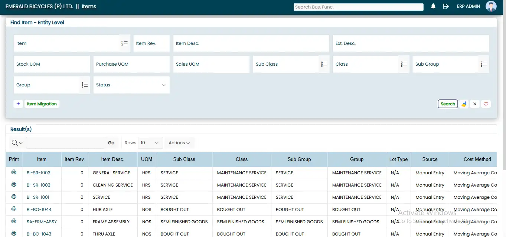
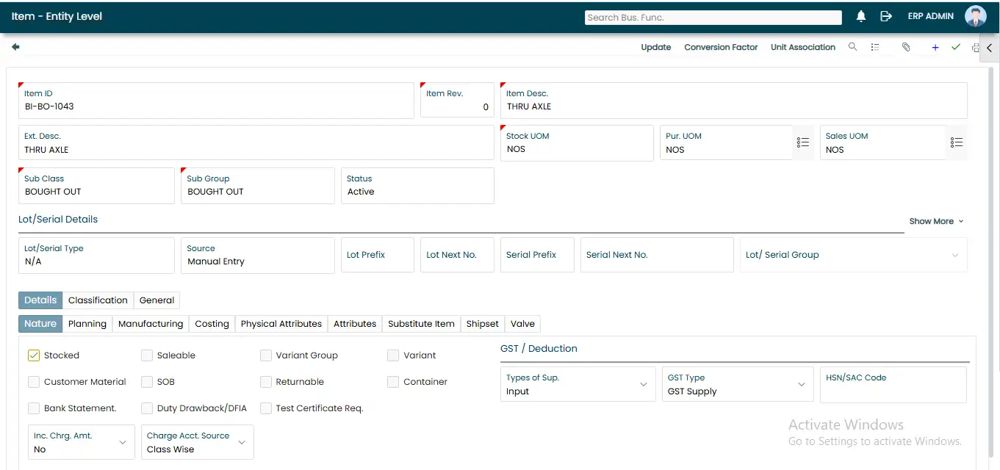
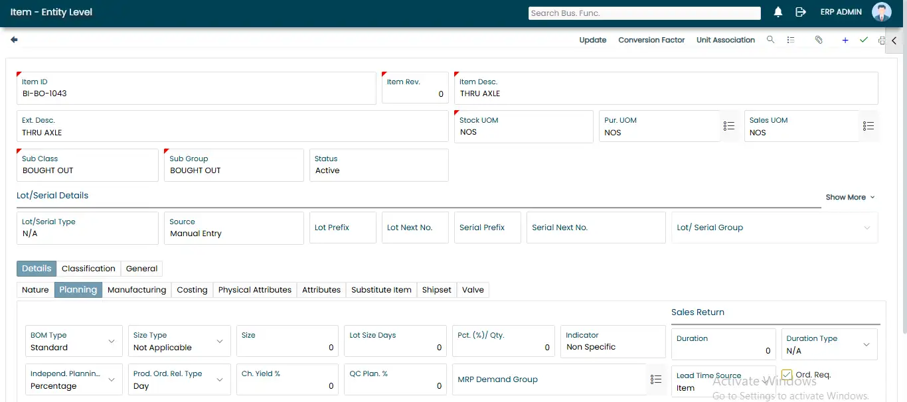
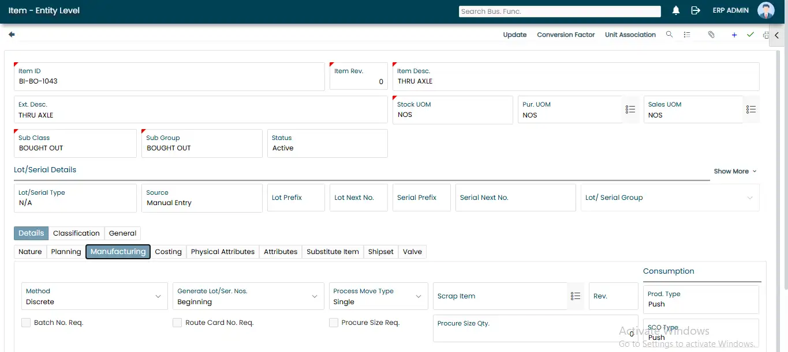
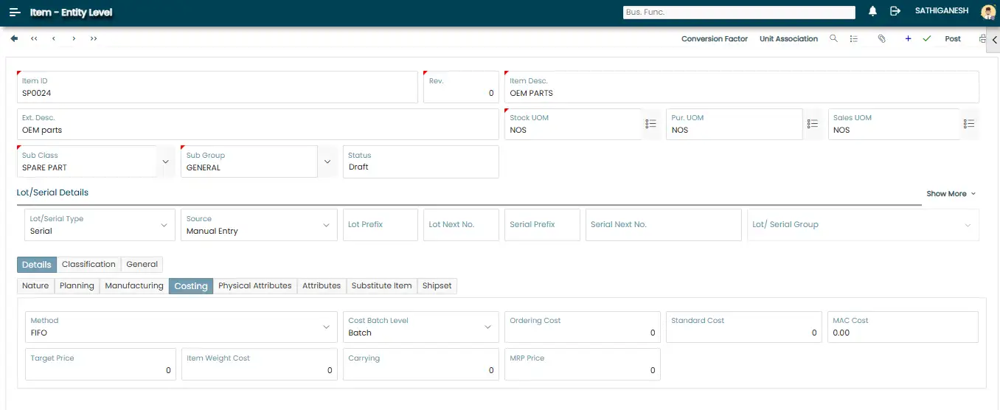

<div data-category="Inventory Control" data-title="Item Entity Level" data-updated="January 27, 2026" data-contributors="RoadmapIT" data-breadcrumb="Home,Inventory Control,Item Entity Level">
  <div class="page-content">
    <p>This is the main setup for creating the Items. User can enter all the details of the Items / Products here. User cannot change or delete an Item if it has any sub-items associated with it. However, user can edit the descriptions and details of the Items as needed.</p>
    <h5>Navigation path:</h5>
    <p class="fs-6">Supply Chain Management \ Inventory \ Setup \ Items</p>
    
    <ul style="list-style-type: none; align-content: center">
      <li class="mouse-icon">Search screen displays the list of Items with the relevant details and its status</li>
      <li class="mouse-icon">User can filter the respective documents by entering the search parameters at the header.</li>
      <li class="mouse-icon">On Clicking search button, system displays the results relevant to the search parameters entered.</li>
      <li class="mouse-icon">
        Using
        
        icon, entered search parameters can be cleared.
      </li>
      <li class="mouse-icon">
        To close the screen, use
        <i class="bi bi-x fs-4 mx-2 text-danger"></i>
        icon.
      </li>
      <li class="mouse-icon">
        Click
        <i class="bi bi-plus fs-4 mx-2 text-primary"></i>
        button to create new Item
      </li>
    </ul>
    
    <ul style="list-style-type: none; align-content: center">
      <li class="mouse-icon">Enter Item ID.</li>
      <li class="mouse-icon">Enter the Item Desc.</li>
      <li class="mouse-icon">Enter the Ext. Desc.</li>
      <li class="mouse-icon">Enter/Select the Stock, Purchase, Sales UOM</li>
      <li class="mouse-icon">Enter /Select the Subclass.</li>
      <li class="mouse-icon">Enter/Select the Sub Group.</li>
      <li class="mouse-icon">If the flag is stocked, the items are declared as stocked item.</li>
      <li class="mouse-icon">If saleable flag is checked, the items are declared as saleable and can be used in Sales process.</li>
      <li class="mouse-icon">Select the Type as Lot/Serial/Serial Lot/Batch Lot from the list item.</li>
      <li class="mouse-icon">Select Type from the list item.</li>
      <li class="mouse-icon">Select Source from the list item.</li>
      <li class="mouse-icon">Enter the Lot and Serial prefix of the item; Type will be selected correspondingly for the fields.</li>
      <li class="mouse-icon">Enter the Lot and serial next number.</li>
      <li class="mouse-icon">
        Click
        <i class="bi bi-check-lg fs-4 mx-1 text-success"></i>
        to save
      </li>
    </ul>
    
    
    <ul style="list-style-type: none; align-content: center">
      <li class="mouse-icon">Select Consumption Type.( Push or Pull)</li>
      <li class="mouse-icon">
        Click
        <i class="bi bi-check-lg fs-4 mx-1 text-success"></i>
        to save
      </li>
    </ul>
    
    <ul style="list-style-type: none; align-content: center">
      <li class="mouse-icon">Select Cost Method from the list item.</li>
      <li class="mouse-icon">Select the required Cost Batch Level</li>
      <li class="mouse-icon">
        Click
        <i class="bi bi-check-lg fs-4 mx-1 text-success"></i>
        to save
      </li>
    </ul>
  </div>
</div>
